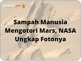

IDN TIMES
5 Fakta Gunung Sampah Ghazipur, Racuni Satu Kota!
Disebut sebagai gunung sampah terbesar di dunia
Sampah merupakan salah satu masalah utama yang harus dihadapi negara berkembang lantaran masyarakatnya yang konsumtif.
Di Indonesia sendiri terdapat gunung sampah di TPST Bantargebang, Bekasi yang menjadi sorotan dunia. Namun, ada gunung sampah yang jauh lebih besar jika dibandingkan TPST Bantargebang. Ia adalah gunung sampah Ghazipur di India.
Disebut sebagai gunung sampah terbesar di dunia yang menjadi bom waktu, berikut 5 fakta gunung sampah Ghazipur. Menjadi salah satu fenomena yang patut diwaspadai, Indonesia harus banyak belajar agar tak mengalami hal serupa.
Apa saja sih faktanya?
1. Terletak di pemukiman penduduk
Menurut The Indian Express, Ghazipur adalah tempat pembuangan sampah terbesar di Asia. Letaknya bersebelahan dengan pemukiman penduduk. Bahkan, penduduk setempat menjadikan gunung sampah ini sebagai rujukan arah tempat tinggal mereka.